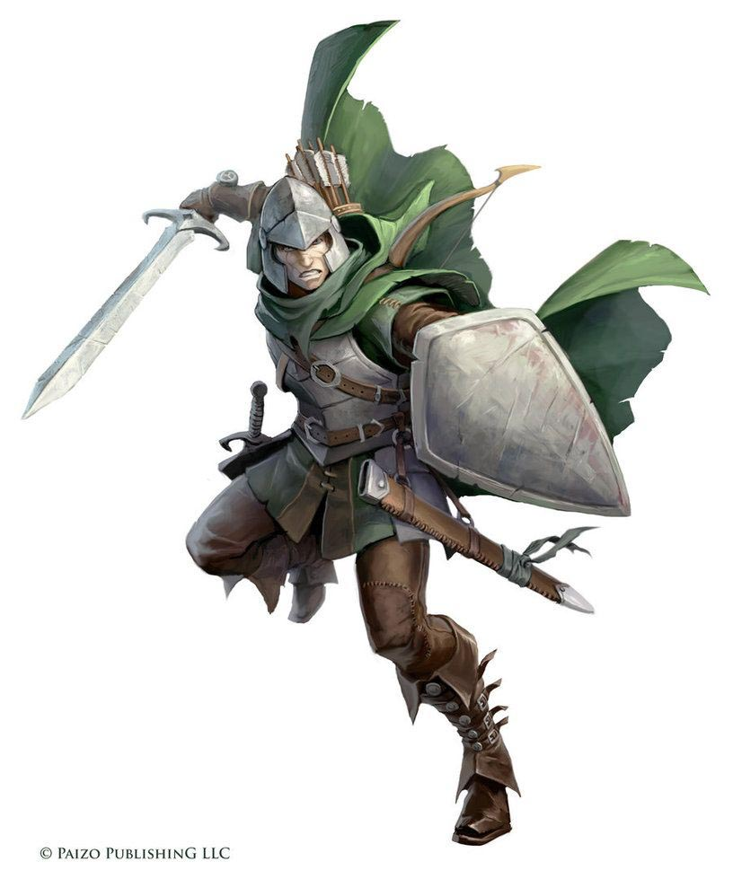
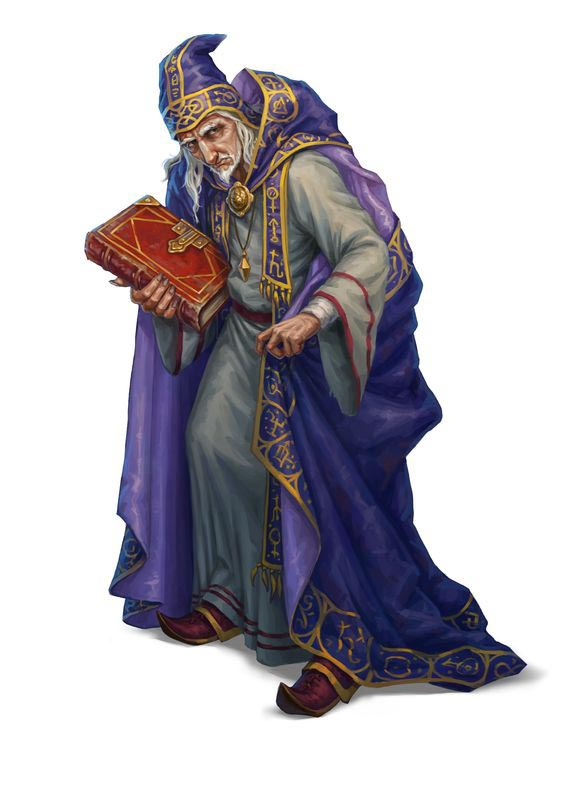
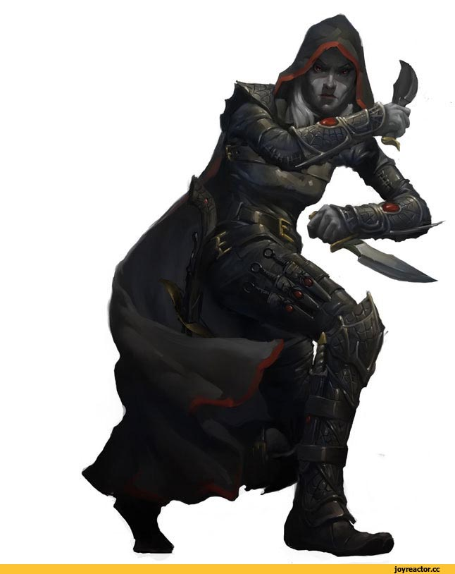
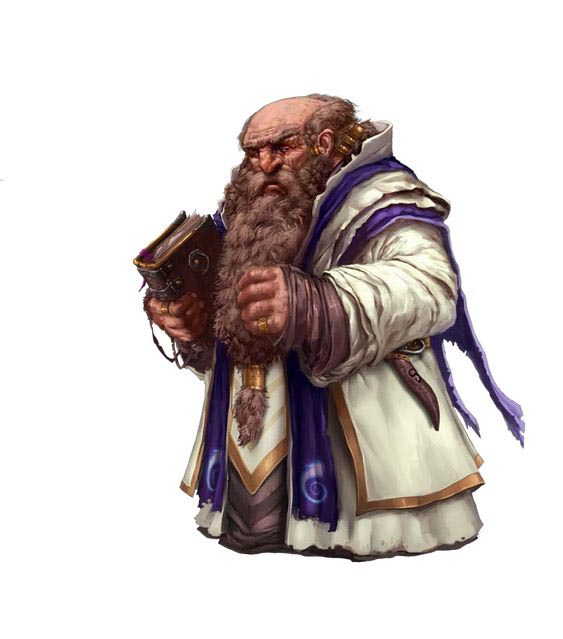

Классы
-
Воин
Опытный гладиатор сражается на арене и хорошо знает, как использовать свои трезубец и сеть, чтобы опрокинуть противника и обойти его, вызывая ликование публики и получая тактическое преимущество. Меч его противника вспыхивает голубым светом и испускает сверкающую молнию. Все эти герои — воины. Представители, возможно, самого разнообразного класса в мире D&D. Странствующие рыцари, военачальники-завоеватели, королевские чемпионы, элитная пехота, бронированные наёмники и короли разбоя — будучи воинами, все они мастерски владеют оружием, доспехами, и приёмами ведения боя. А еще они хорошо знакомы со смертью — они несут её сами, и часто смотрят в её холодные глаза.
Полная информация о войне -
Волшебник
Волшебники — адепты высшей магии, объединяющиеся по типу своих заклинаний. Опираясь на тонкие плетения магии, пронизывающей вселенную, волшебники способны создавать заклинания взрывного огня, искрящихся молний, тонкого обмана и грубого контроля над сознанием. Их магия вызывает чудовищ с других планов бытия, предсказывает будущее и обращает поверженных врагов в зомби. Их самые могущественные заклинания могут превращать одно вещество в другое, вызывать метеориты с небес и открывать порталы в другие миры.
Полная информация о волшебнике -
Плут
Плуты полагаются на мастерство, скрытность и уязвимые места врагов, чтобы взять верх в любой ситуации. У них достаточно сноровки для нахождения решения в любой ситуации, демонстрируя находчивость и гибкость, которые являются краеугольным камнем любой успешной группы искателей приключений.
Полная информация о плуте -
Жрец
Жрецы являются посредниками между миром смертных и далёкими мирами богов. Настолько же разные, насколько боги, которым они служат, жрецы воплощают работу своих божеств. В отличие от обычного проповедника, жрец наделён божественной магией.
Полная информация о жреце